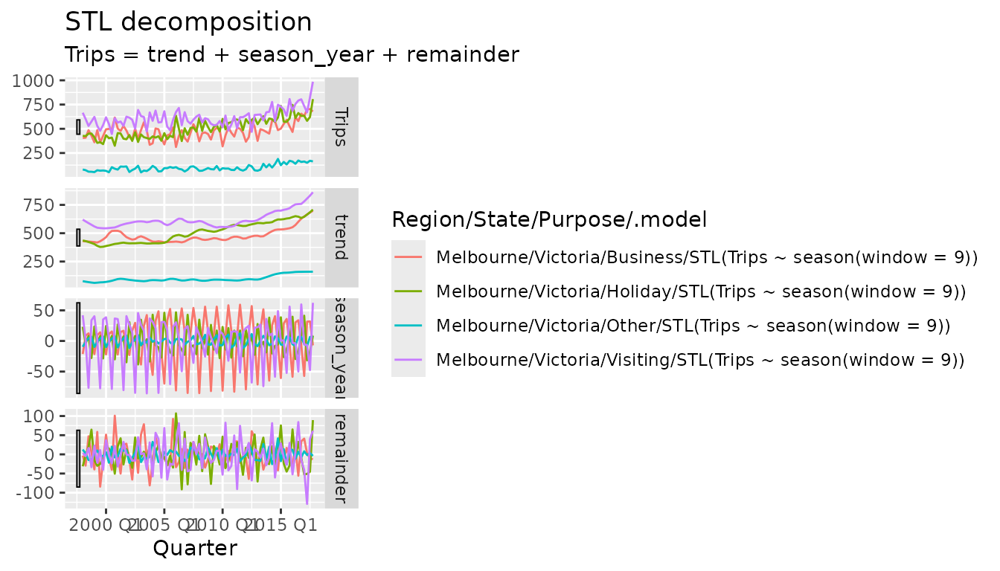

The feasts package provides a smorgasbord of tools for analysing tidy temporal data in the tsibble format. The package name is an acronym of its primary functionality: Feature Extraction and Statistics for Time Series.
Suppose we wanted to analyse seasonal patterns in the number of
domestic travellers to Melbourne, Australia. In the
tsibble::tourism data set, this can be further broken down
into 4 reasons of travel: “business”, “holiday”, “visiting friends and
relatives” and “other reasons”. The first observation from each series
are shown below.
tourism_melb <- tourism %>%
filter(Region == "Melbourne")
tourism_melb %>%
group_by(Purpose) %>%
slice(1)
#> # A tsibble: 4 x 5 [1Q]
#> # Key: Region, State, Purpose [4]
#> # Groups: Purpose [4]
#> Quarter Region State Purpose Trips
#> <qtr> <chr> <chr> <chr> <dbl>
#> 1 1998 Q1 Melbourne Victoria Business 405.
#> 2 1998 Q1 Melbourne Victoria Holiday 428.
#> 3 1998 Q1 Melbourne Victoria Other 79.9
#> 4 1998 Q1 Melbourne Victoria Visiting 666.A useful first look at a time series is with a standard time series plot.

This plot reveals that each of the reasons for visiting Melbourne follow a similar pattern, and that in recent years the amount of tourism is increasing. It is also clear that most people travel to Melbourne for one of three reasons (Business, Holiday or Visiting), and fewer travellers report other travel purposes.
While this plot reveals many useful large scale features of the data, it can be difficult to identify specifics about the seasonal pattern (other than its existence). Which quarter has the most tourism travel in Melbourne? To find out we will need to investigate other plot types.

The seasonal plot (gg_season()) wraps a seasonal period
(in this case, years) over the x axis, allowing you to see how each
quarter varies. In particular, it is apparent that Q3 is a low point for
people visiting friends and relatives, which noticeably increases in Q4.
Similarly Q2 and Q3 are the time periods with the most business
travel.
The trend of recent years can also be seen in the spread between the lines. The more recent years (purple/pink) are higher than the previous years. This also reveals that the drop in visiting tourism in Q3 was far less extreme in the most recent two years.
tourism_melb %>%
gg_subseries(Trips)
An alternative visualisation of seasonal patterns is the subseries
plot (gg_subseries()), which isolates seasonal periods into
separate plots. The blue lines indicate the average number of trips in
each quarter, making the increase in visiting tourism from Q3 to Q4 more
obvious. This plot style is especially useful in seeing how seasonality
changes over time. Focusing on the visiting tourism (last row of
facets), the number of tourists in Q3 and Q4 are increasing much more
than in Q1 and Q2 (suggesting that the trend may vary between
seasons).
A look at the correlations in each series could reveal structures which are difficult to identify in the above plots.
tourism_melb %>%
ACF(Trips)
#> # A tsibble: 76 x 5 [1Q]
#> # Key: Region, State, Purpose [4]
#> Region State Purpose lag acf
#> <chr> <chr> <chr> <cf_lag> <dbl>
#> 1 Melbourne Victoria Business 1Q 0.487
#> 2 Melbourne Victoria Business 2Q 0.193
#> 3 Melbourne Victoria Business 3Q 0.331
#> 4 Melbourne Victoria Business 4Q 0.470
#> 5 Melbourne Victoria Business 5Q 0.219
#> 6 Melbourne Victoria Business 6Q 0.0750
#> 7 Melbourne Victoria Business 7Q 0.168
#> 8 Melbourne Victoria Business 8Q 0.321
#> 9 Melbourne Victoria Business 9Q 0.166
#> 10 Melbourne Victoria Business 10Q -0.0183
#> # ℹ 66 more rowsThe above code computes autocorrelations (ACF()),
however it is also possible to compute partial autocorrelations
(PACF()) and cross-correlations (CCF()).
The tables given from these correlation functions also have a nice
autoplot() method, which will show the correlations along
with a threshold for significance (controllable with the
level argument).

Another helpful strategy in investigating the patterns in a time series is to decompose it into components of interest. A useful decomposition for this is the STL decomposition, which allows you to extract multiple seasonal patterns with any seasonal period.
tourism_melb %>%
model(STL(Trips ~ season(window = "periodic"))) %>%
components()
#> # A dable: 320 x 10 [1Q]
#> # Key: Region, State, Purpose, .model [4]
#> # : Trips = trend + season_year + remainder
#> Region State Purpose .model Quarter Trips trend season_year remainder
#> <chr> <chr> <chr> <chr> <qtr> <dbl> <dbl> <dbl> <dbl>
#> 1 Melbourne Victoria Business "STL(T… 1998 Q1 405. 437. -58.0 25.8
#> 2 Melbourne Victoria Business "STL(T… 1998 Q2 408. 434. 18.1 -44.1
#> 3 Melbourne Victoria Business "STL(T… 1998 Q3 486. 430. 37.9 18.3
#> 4 Melbourne Victoria Business "STL(T… 1998 Q4 429. 431. 1.99 -3.48
#> 5 Melbourne Victoria Business "STL(T… 1999 Q1 361. 427. -58.0 -7.82
#> 6 Melbourne Victoria Business "STL(T… 1999 Q2 486. 409. 18.1 58.6
#> 7 Melbourne Victoria Business "STL(T… 1999 Q3 359. 418. 37.9 -97.0
#> 8 Melbourne Victoria Business "STL(T… 1999 Q4 426. 440. 1.99 -16.7
#> 9 Melbourne Victoria Business "STL(T… 2000 Q1 495. 468. -58.0 84.1
#> 10 Melbourne Victoria Business "STL(T… 2000 Q2 499. 501. 18.1 -19.8
#> # ℹ 310 more rows
#> # ℹ 1 more variable: season_adjust <dbl>The above call to STL() has decomposed the
Trips variable into three components such that
Trips = trend + season_year + remainder. By setting
season(window = "periodic"), we have set the seasonal
pattern to be unchanging — you can control how quickly the seasonal
pattern can change by setting this to some number (smaller numbers
correspond to more rapid change).

Much like the table from ACF(), decompositions can also
be plotted with autoplot(). This gives the expected faceted
plot of the components extracted from the measured variable. The plot
shows that each purpose of travel has a different seasonal pattern, and
that the strength and structure of this pattern has changed over time.
As these components are often on different scales, this plot includes a
set of scale bars which are of equal scaled size across all plots.
The above plots and analysis are useful for if you’re looking at a
few series, but what can be done if you needed to look at and compare
more time series? Extracting features from a collection of time series
is a scalable approach to analysing many data sets. Each feature is a
numerical summary of the data set’s defining characteristics, and a set
of features can be created using feature_set().
tourism_melb_features <- tourism_melb %>%
features(Trips, feature_set(tags = "stl"))
tourism_melb_features
#> # A tibble: 4 × 12
#> Region State Purpose trend_strength seasonal_strength_year seasonal_peak_year
#> <chr> <chr> <chr> <dbl> <dbl> <dbl>
#> 1 Melbou… Vict… Busine… 0.782 0.559 3
#> 2 Melbou… Vict… Holiday 0.864 0.308 1
#> 3 Melbou… Vict… Other 0.826 0.183 3
#> 4 Melbou… Vict… Visiti… 0.759 0.475 0
#> # ℹ 6 more variables: seasonal_trough_year <dbl>, spikiness <dbl>,
#> # linearity <dbl>, curvature <dbl>, stl_e_acf1 <dbl>, stl_e_acf10 <dbl>In the example above, the components from the STL decomposition has been used to summarise the strength of trend and seasonality components of each series.
These features are particularly useful to show on a plot.
library(ggplot2)
tourism_melb_features %>%
ggplot(aes(x = trend_strength, y = seasonal_strength_year, colour = Purpose)) +
geom_point() +
coord_equal() +
lims(x = c(0,1), y = c(0,1))When analysing just four series, a plot of the features does not look
very exciting. It is worth noting that a lot of the individuality seen
in the previous analysis have been lost when each series is summarised
down to just two values. However recall that the analysis has been
working from a very small subset of the complete tourism
data set. Let’s see how Melbourne compares with the other regions in the
data.
tourism_features <- tourism %>%
features(Trips, feat_stl)
ggplot(mapping = aes(x = trend_strength, y = seasonal_strength_year, colour = Purpose)) +
geom_point(data = tourism_features, alpha = 0.3) +
geom_point(data = tourism_melb_features, size = 2) +
coord_equal() +
facet_wrap(vars(Purpose)) +
lims(x = c(0,1), y = c(0,1))
Looks like Melbourne is one of the trendiest places around Australia!
More information about time series analysis using the feasts package can be found in Forecasting: Principles and Practices (3rd Ed.) and in the pkgdown site.